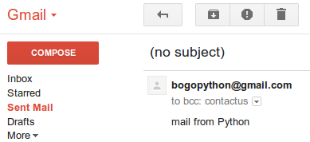
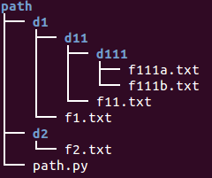
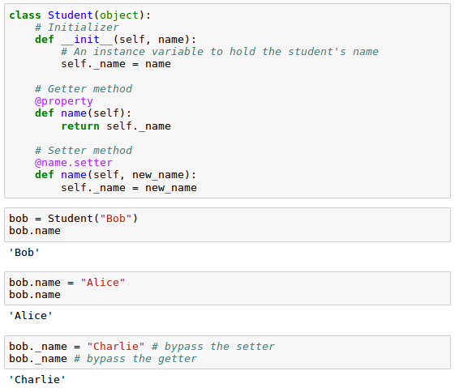
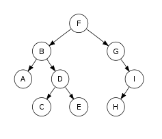
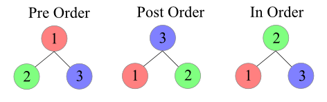

Interview Questions IV - 2017
Here is a text, astronomical jokes. Write a code that spits out 'n' most common words with its frequency. We may want to use 'collections' container.
astro_jokes = """ 1. A Higgs boson goes into a church and the priest says, "We don't allow Higgs bosons here." And the Higgs boson says, "But without me there is no mass." 2. A photon walks into a bar and orders a drink. The bartender says, "Do you want a double?" And the photon says, "No I'm traveling light." 3. I was up all night wondering where the sun had gone ... then it dawned on me. 4. Never trust an atom because they make up everything. 5. Two atoms bump into each other. One says "I've lost an electron." "Are you sure?" "Yes, I'm positive." 6. How does the man in the moon cut his hair? Eclipse it. 7. A neutron goes into a bar and asks the bartender, "How much for a beer?" The bartender replies, "For you, no charge." 8. The speed of time is one second per second. """
The code looks like this:
import collections
def wcount(n=5):
words = astro_jokes.split()
word_count = collections.Counter(words)
print("Top {0} words".format(n))
for word, count in word_count.most_common(n):
print("{0}:{1}".format(word,count))
if __name__ == "__main__":
n = input("type in # of top items to print : ")
wcount(int(n))
Output:
type in # of top items to print : 10 Top 10 words the:7 a:6 says,:4 into:4 and:3 Higgs:3 The:3 A:3 boson:2 bar:2
Pig Latin problem.
For words that begin with consonant sounds, all letters before the initial vowel are placed at the end of the word sequence. Then, "ay" (some people just add "a") is added, as in the following examples:
d = {
"pig":"igpay",
"banana" : "ananabay",
"trash" : "ashtray",
"happy" : "appyhay",
"duck" : "uckday",
"glove" : "oveglay"
}
Write a code that loops through the given dictionary 'd', convert the keys and check if the conversions are correct by checking if new_key == value.
Here is the code in Python 3:
# Pig Latin
'''
For words that begin with consonant sounds,
all letters before the initial vowel are placed at the end of the word sequence.
Then, "ay" (some people just add "a") is added, as in the following examples:
'''
d = {
"pig":"igpay",
"banana" : "ananabay",
"trash" : "ashtray",
"happy" : "appyhay",
"duck" : "uckday",
"glove" : "oveglay"
}
vowel = "aeiou"
d_new = {}
for key,value in d.items():
for i,c in enumerate(key):
if c in vowel:
w = key[i:]+key[:i]+'ay'
break
d_new[key] = w
# check the output
for k, v in d_new.items():
if v == d[k]:
print "%s:%s (O)" %(k,v)
else:
print "%s:%s (X)" %(k,v)
Output:
glove:oveglay (O) pig:igpay (O) duck:uckday (O) trash:ashtray (O) banana:ananabay (O) happy:appyhay (O)
Create a anagram list from a list of words.
anagram = []
words = ['fired', 'alert', 'remain', 'alter', 'allergy', 'gallery',
'abets', 'baste', 'fried', 'beast', 'beats']
# construct a words_dict = { key:value } = { key:sorted(key),...}
# (ex) { 'fired':'deirf', 'alert':'aelrt',...}
words_dict = {}
for w in words:
words_dict[w] = ''.join(sorted(w))
# make a list of groups with the same value
new_words = sorted(words_dict.values())
# make a new dic with sorted keys
# (ex)
# {'aegllry': ['allergy', 'gallery'],
# 'defir': ['fried', 'fired'], ..........}
anagram = {}
for s in set(new_words):
anagram[s]=[]
for k,v in words_dict.items():
if s == v:
anagram[s].append(k)
# make list of anagrams
# (ex)
# [['allergy', 'gallery'],
# ['abets', 'baste', 'beast', 'beats'],
# ['fried', 'fired'], ['remain'], ['alter', 'alert']]
anagram_list = []
for k,v in anagram.items():
anagram_list.append(v)
print anagram_list
Output:
[['allergy', 'gallery'], ['abets', 'baste', 'beast', 'beats'], ['fried', 'fired'], ['remain'], ['alter', 'alert']]
If we use itertools, the solution can be more compact like this:
import itertools
words = ['fired', 'alert', 'remain', 'alter', 'allergy', 'gallery',
'abets', 'baste', 'fried', 'beast', 'beats']
anagram_list = []
words1 = sorted(words, key=sorted)
for _, group in itertools.groupby(sorted(words, key=sorted), sorted):
group = list(group)
if len(group) > 1:
anagram_list.append(group)
print anagram_list
Sometimes we just want to use a function with no name (without def).
So, here is a simple codes :
- Sum up all elements in a list of [1,100] using "functools.reduce()":
>>> from functools import reduce >>> reduce(lambda a,b: a+b, [n for n in range(101)]) 5050
- How about getting odd numbers in range(10) with a filter function?
>>> list(filter(lambda x: x%2 != 0, [x for x in range(10)])) [1, 3, 5, 7, 9]
- Using map function, create a list of cubics for the numbers in range(10):
>>> list(map(lambda x: x**3, [x for x in range(10)])) [0, 1, 8, 27, 64, 125, 216, 343, 512, 729]
Here is the code for sending an email using gmail as a SMTP server:
$ python
Python 3.4.3 (default, Oct 14 2015, 20:28:29)
[GCC 4.8.4] on linux
Type "help", "copyright", "credits" or "license" for more information.
>>> import os
>>> import smtplib
>>> email_server = smtplib.SMTP('smtp.gmail.com', 587)
>>> email_server.starttls()
(220, b'2.0.0 Ready to start TLS')
>>> password = os.environ['BOGOPYTHON_PASSWORD']
>>> email_server.login('bogopython@gmail.com', password)
(235, b'2.7.0 Accepted')
>>> email_server.sendmail('bogopython@gmail.com', 'contactus@bogotobogo.com', 'mail from Python')
{}
Here is the gmail's "Sent Mail":
Write code to generate the following histogram display based on the frequency of occurrence of characters in the first argument to the program.
$ python histogram.py "Mississippi borders Tennessee." s: ####### e: ##### i: #### : ## n: ## p: ## r: ## b: # d: # M: # o: # T: # .: #
Code:
'''
run:
$ python q1.py "Mississippi borders Tennessee."
'''
import sys
import operator
word = sys.argv[1]
# initialize dictionary : all values to 0
mydict = dict.fromkeys(word,0)
# loop through the input string char by char
# increment the value by 1 if it sees the key
for c in word:
mydict[c] += 1
# sort the dict in descending order by value
# and put into a list of tuples [(char,count),...]
sorted_tuple_list = sorted(mydict.items(), key=operator.itemgetter(1), reverse=True)
# output
for char, count in sorted_tuple_list:
print("%s:\t %s" %(char, '#'*count))
Reads in json file and draw a histogram for ip-addresses in ascending order. Here is the json file ("user.json"):
{
"Users": [{
"Name": "Jane",
"ip": "192.3.82.9",
"date": "2017.03.23"
}, {
"Name": "Mike",
"ip": "10.3.82.9",
"date": "2017.03.21"
}, {
"Name": "Damon",
"ip": "10.3.82.9",
"date": "2017.03.23"
}, {
"Name": "Peter",
"ip": "175.3.82.9",
"date": "2017.03.23"
}, {
"Name": "Peter",
"ip": "175.3.82.9",
"date": "2017.03.24"
}, {
"Name": "Mike",
"ip": "178.3.82.9",
"date": "2017.03.23"
}, {
"Name": "Mike",
"ip": "178.3.82.9",
"date": "2017.03.24"
}, {
"Name": "Mike",
"ip": "178.3.82.9",
"date": "2017.03.25"
}, {
"Name": "Mike",
"ip": "178.3.82.9",
"date": "2017.03.26"
}, {
"Name": "Mike",
"ip": "178.3.82.9",
"date": "2017.03.27"
}, {
"Name": "Mike",
"ip": "178.3.82.9",
"date": "2017.03.28"
}]
}
import simplejson as json
dic = json.load(open("user.json"))
users = dic["Users"] # [{},{},...]
ips = []
for u in users: # u = {"Name": "Jane","ip": "192.3.82.9", "date": "2017.03.23"}
ips.append(u["ip"])
print ips
# count dictionay
d = {}.fromkeys(ips,0)
for ip in ips:
d[ip] += 1
print d
# draw histogram after sorting by the key
for k,v in sorted(d.items()):
print '%s\t%s' %(k,'#'*v)
Output:
['192.3.82.9', '10.3.82.9', '10.3.82.9', '175.3.82.9', '175.3.82.9', '178.3.82.9', '178.3.82.9', '178.3.82.9', '178.3.82.9', '178.3.82.9', '178.3.82.9']
{'175.3.82.9': 2, '10.3.82.9': 2, '178.3.82.9': 6, '192.3.82.9': 1}
10.3.82.9 ##
175.3.82.9 ##
178.3.82.9 ######
192.3.82.9 #
>>> list_of_tuple = [('one',1),('two',2),('three',3)]
>>> d = {}
>>> for t in list_of_tuple:
... d[t[0]]=t[1]
...
>>> d
{'three': 3, 'two': 2, 'one': 1}
Given a list : mylist='abc', how do we get the index?
Wrong way:>>> for i in range(len(mylist)): ... v = mylist[i] ... print(i,v) ... 0 a 1 b 2 c
Right way:
>>> for i,v in enumerate(mylist): ... print(i,v) ... 0 a 1 b 2 c
Internally, enumerate takes iterable and pulls values off the iterable. Then, bundles them with indices and returns pairs of (index, item) like this:
>>> list(enumerate(mylist)) [(0, 'a'), (1, 'b'), (2, 'c')]
Not only the wrong way of getting index requires more lines of code but also will fail for the iterable that can't be indexed when we deal with file. The enumerate can give us line number and the line at the same time:
>>> with open('myfile.txt','r') as f:
... for linenum, line in enumerate(f, start=1):
... print(linenum,':',line)
...
1 : line 1
2 : line 2
3 : line 3
Here are the two lists : Name of Galaxies and the distances from the earth in million light years:
>>> galaxies = ['Small Magellanic Cloud', 'Andromeda Galaxy', 'Centaurus A'] >>> distance_in_Mly = [0.2, 2.5, 13.7]
How can we make them as a pair and loop over?
>>> for galaxy, dist in zip(galaxies, distance_in_Mly):
... print('%s: %s Mly' % (galaxy, dist))
...
Small Magellanic Cloud: 0.2 Mly
Andromeda Galaxy: 2.5 Mly
Centaurus A: 13.7 Mly
The zip takes two iterables and returns an iterable with pair of items from the two iterables.
Note that the zip produces stream of pairs, we can use dictionary like this:
>>> dict(zip(galaxies, distance_in_Mly))
{'Andromeda Galaxy': 2.5, 'Centaurus A': 13.7, 'Small Magellanic Cloud': 0.2}
We may want to play with the dictionary a little bit more:
>>> d = dict(zip(galaxies, distance_in_Mly))
>>> print(d)
{'Andromeda Galaxy': 2.5, 'Centaurus A': 13.7, 'Small Magellanic Cloud': 0.2}
How do we get the farthest Galaxy?
If we simply want to get the distance only, we can use max() wiht values():
>>> max(d.values()) 13.7
But we want to get the name of the Galaxy as well. So, we want to use key based on value when we iterate over the dict:
>>> d.items()
dict_items([('Andromeda Galaxy', 2.5), ('Centaurus A', 13.7), ('Small Magellanic Cloud', 0.2)])
>>> max(d.items(), key=lambda x:x[1])
('Centaurus A', 13.7)
Note that we specified the 2nd item (x[1]) of the dictionary as a key!
Write a program to create an associative array ("hash") named "last_name" whose keys are the five first names "Mary", "James", "Thomas", "William", "Elizabeth".
Set the corresponding values for these keys to be "Li", "O'Day", "Miller", "Garcia", "Davis".
Then print out the five full names, each on its own line, sorted primarily by length of last name and with a secondary sort alphabetically by first name.
The code looks like this:
first = ["Mary", "James", "Thomas", "William", "Elizabeth"]
last = ["Li", "O'Day", "Miller", "Garcia", "Davis"]
# construct dictionaly (key, value) = (first, last)
name_dict = dict(zip(first, last))
# sort the dictionary using two keys :
# the key tuple used is (len(last), first)
name_list = sorted(name_dict, key = lambda k: (len(name_dict[k]), k))
# outputs full name
for item in name_list:
print("%s %s" %(item, name_dict[item]))
'''
outputs
Mary Li
Elizabeth Davis
James O'Day
Thomas Miller
William Garcia
'''
Write a code for downloading a csv (http://www.bogotobogo.com/python/files/Interview3/table.csv) in Python2 and Python3.
Python 3 (p3.py):
import urllib.request
url = 'http://www.bogotobogo.com/python/files/Interview3/table.csv'
source = urllib.request.urlopen(url).read() # returns string
with open('file3.csv', 'wb') as f:
f.write(source)
Python 2 (p2.py):
import urllib
url = 'http://www.bogotobogo.com/python/files/Interview3/table.csv'
source = urllib.urlopen(url).read() # returns bytes
with open('file2.csv', 'wb') as f:
f.write(source)
We can run them like this:
$ virtualenv -p python2 venv2 $ source venv2/bin/activate (venv2)$ python p2.py $ deactivate $ virtualenv -p python3 venv3 $ source venv3/bin/activate (venv3)$ python p3.py
We want to read cvs file and sort each data by "Volume" with is the 5th item. The data looks like this:
Date,Open,High,Low,Close,Volume,Adj Close 2016-05-13,711.929993,716.661987,709.26001,710.830017,1307300,710.830017 2016-05-13,711.929993,716.661987,709.26001,710.830017,1307300,710.830017 2016-05-12,717.059998,719.25,709.00,713.309998,1360700,713.309998 2016-05-12,717.059998,719.25,709.00,713.309998,1360700,713.309998 2016-05-11,723.409973,724.47998,712.799988,715.289978,1686800,715.289978 2016-05-11,723.409973,724.47998,712.799988,715.289978,1686800,715.289978 2016-05-10,716.75,723.50,715.719971,723.179993,1563100,723.179993 2016-05-10,716.75,723.50,715.719971,723.179993,1563100,723.179993
Here is the code:
import csv
from operator import itemgetter
with open("table.csv") as csvfile:
reader = csv.reader(csvfile, delimiter=',')
t = [row for i,row in enumerate(reader) if i > 0]
t_new = sorted(t, key=itemgetter(5), reverse=True)
for line in t_new:
print line
From the following json file (t.json) find the "count" :
{
"variable": {
"ami": {
"description": "the AMI to use"
}
},
"resource": {
"aws_instance": {
"web": {
"ami": "${var.ami}",
"count": 2,
"source_dest_check": false,
"connection": {
"user": "root"
}
}
}
}
}
Here is the code:
import simplejson as json
f = open("t.json")
j = json.load(f)
print j
print "count=%s" %(j["resource"]["aws_instance"]["web"]["count"])
Output:
{'variable': {'ami': {'description': 'the AMI to use'}}, 'resource': {'aws_instance': {'web': {'ami': '${var.ami}', 'count': 2, 'connection': {'user': 'root'}, 'source_dest_check': False}}}}
count=2
Suppose we have a list of class objects as below, and we want to sort either by the 'name' or 'birth' year:
scientist = [
Scientist('Alan Guth', 1947),
Scientist('Brian Schmidt', 1967),
Scientist('Brian Greene', 1963),
Scientist('Lawrence Krauss', 1954),
Scientist('Frank Wilczek', 1951),
Scientist('David Gross', 1941),
Scientist('Wendy Freedman', 1957),
Scientist('Maria Spiropulu',1970),
Scientist('George Smoot III', 1945),
Scientist('Saul Perlmutter', 1959)
]
where the class is defined like this:
class Scientist:
def __init__(self, name, birth):
self.name = name
self.birth = birth
Write a code that can do the sort.
Output should look list this:
------------------------------ Alan Guth : 1947 Brian Greene : 1963 Brian Schmidt : 1967 David Gross : 1941 Frank Wilczek : 1951 George Smoot III : 1945 Lawrence Krauss : 1954 Maria Spiropulu : 1970 Saul Perlmutter : 1959 Wendy Freedman : 1957 ------------------------------ David Gross : 1941 George Smoot III : 1945 Alan Guth : 1947 Frank Wilczek : 1951 Lawrence Krauss : 1954 Wendy Freedman : 1957 Saul Perlmutter : 1959 Brian Greene : 1963 Brian Schmidt : 1967 Maria Spiropulu : 1970
Note that if we try to sort the "scientist" directly using "sorted()", we get the following complain:
for s in sorted(scientist): TypeError: unorderable types: Scientist() < Scientist()
One of the ways doing the sort is to use operator.attrgetter() method:
import operator
class Scientist:
def __init__(self, name, birth):
self.name = name
self.birth = birth
# string representation of the obj
def __repr__(self):
return self.name + ' : ' + str(self.birth)
scientist = [
Scientist('Alan Guth', 1947),
Scientist('Brian Schmidt', 1967),
Scientist('Brian Greene', 1963),
Scientist('Lawrence Krauss', 1954),
Scientist('Frank Wilczek', 1951),
Scientist('David Gross', 1941),
Scientist('Wendy Freedman', 1957),
Scientist('Maria Spiropulu',1970),
Scientist('George Smoot III', 1945),
Scientist('Saul Perlmutter', 1959)
]
for s in scientist:
print(s)
print('-'*30)
'''
for s in sorted(scientist):
print(s)
print('-'*30)
'''
for s in sorted(scientist, key=operator.attrgetter('name')):
print(s)
print('-'*30)
for s in sorted(scientist, key=operator.attrgetter('birth')):
print(s)
print('-'*30)
Given a string consists of different types of brackets, write a function to determine the string is balanced.
For example, " ([])" and "[]{}" are balanced but "([)]" and "](){" are not.
We can assume these are the only characters in the string: ()[]{}.
If the strings are only consists of ( and ), it should not affect our solution. For example: " (())" or " (()("
The key to the solution is to use "stack".
def isBalanced(test):
st = []
for b in test:
if b == '(':
st.append(b)
elif b == ')':
if st[-1] != '(':
return False
else:
st.pop()
if b == '{':
st.append(b)
elif b == '}':
if st[-1] != '{':
return False
else:
st.pop()
if b == '[':
st.append(b)
elif b == ']':
if st[-1] != '[':
return False
else:
st.pop()
# openings popped off yet, return False
if st:
return False
# passed the check, return True
return True
if __name__ == '__main__':
test = ['[](){}', '([)]' , '({[]})', '[()]{{}}', '[[())]]', '(({})[])', '()(()', '(()(']
bal = True
for t in test:
bal = isBalanced(t)
print("%s is balanced? %s" %(t, bal))
'''
OUTPUT
[](){} is balanced? True
([)] is balanced? False
({[]}) is balanced? True
[()]{{}} is balanced? True
[[())]] is balanced? False
(({})[]) is balanced? True
()(() is balanced? False
(()( is balanced? False
'''
Print all pull paths for the files under the directory where the running python script (path.py) is.
Here is the code:
import os
script_location = os.path.dirname(os.path.abspath(__file__))
for dirpath, dirs, files in os.walk(script_location):
for f in files:
print(os.path.join(dirpath,f))
Output:
/home/k/TEST/PYTHON/path/path.py /home/k/TEST/PYTHON/path/d1/f1.txt /home/k/TEST/PYTHON/path/d1/d11/f11.txt /home/k/TEST/PYTHON/path/d1/d11/d111/f111a.txt /home/k/TEST/PYTHON/path/d1/d11/d111/f111b.txt /home/k/TEST/PYTHON/path/d2/f2.txt
Though needs more lines of code, here is another solution without using os.walk():
def list_files(path):
import os
# os.listdir(path) - outputs files and dirs
for child in os.listdir(path):
childPath = os.path.join(path, child)
if os.path.isdir(childPath):
list_files(childPath)
else:
print(childPath)
list_files('.')
Note that we make recursive call to "list_files()" if the "childPath" is a directory.
The difference is not that obvious.
In short, str() focused on user friendliness while repr() is more helpful to the developers.
Let's see a non-obvious case first:
a = [1,2,3] b = "123" print(str(a)) print(str(b)) print(repr(a)) print(repr(b))
Output:
[1, 2, 3] 123 [1, 2, 3] '123'
Now a case that's more obvious:
import datetime
a = datetime.datetime.now()
b = str(a)
print("str(a)=%s" % str(a))
print("str(b)=%s" % str(b))
print
print("repr(a)=%s" % repr(a))
print("repr(b)=%s" % repr(b))
If we run it, we get:
str(a)=2016-06-25 14:30:28.987309 str(b)=2016-06-25 14:30:28.987309 repr(a)=datetime.datetime(2016, 6, 25, 14, 30, 28, 987309) repr(b)='2016-06-25 14:30:28.987309'
As Python doc says repr() returns a string that would yield an object with the same value when passed to eval() while str() simply returns a processed string.
So, the repr() returns a string which is more of a command than just a string:
>>> import datetime >>> datetime.datetime(2016, 6, 25, 14, 30, 28, 987309) datetime.datetime(2016, 6, 25, 14, 30, 28, 987309) >>> print(datetime.datetime(2016, 6, 25, 14, 30, 28, 987309)) 2016-06-25 14:30:28.987309
Find a missing integer from a sequence.
(a_1 + a_n) * N / 2 - sum
will give us the missing integer.
a=[1,2,3,4,5,7,8,9,10] find = sum(range(a[0],a[-1]+1)) - sum(a) print find
Output:
6
In the following example, we construct two classes : parent - Animal, chile - Dog.
In the get_type(self, objType) method, it will grab appropriate get_type() method depending the objType:
class WhichAnimal(object):
def get_type(self, objType):
objType.get_type()
Note that when we talk about polymorphism, the bottom line is we're manipulating things on top of inheritance!
Here is the code:
class Animal(object):
_name = ""
_sound = ""
def __init__(self, name, sound):
self._name = name
self._sound = sound
def __repr__(self):
return("name : %s sound : %s"
% (self._name, self._sound))
def get_sound(self):
return self._sound
def get_type(self):
print("Animal")
class Dog(Animal):
_home = 'San Francisco'
def __init__(self, name, sound, home):
self._home = home
super(Dog, self).__init__(name, sound)
def __repr__(self):
return ("name : %s sound : %s home : %s"
% (self._name, self._sound, self._home))
def get_type(self):
print("Dog")
def makeSound(self, ntimes = 1):
print("%s" %((self.get_sound() + ' ' )* ntimes))
aMystery = Animal("No-Name", "tsss")
print(aMystery)
pDog = Dog("Puppy", "yap", "New York")
print(pDog)
pDog.makeSound(5)
# polymorphism
class WhichAnimal(object):
def get_type(self, objType):
objType.get_type()
w_animal = WhichAnimal()
# polymorphism
# depending on the animal objType,
# Animal.get_type() or Dog.get_type()
w_animal.get_type(aMystery)
w_animal.get_type(pDog)
Output:
name : No-Name sound : tsss name : Puppy sound : yap home : New York yap yap yap yap yap Animal Dog
We have a list of integers, and for each index we want to find the product of every integer except the integer at that index.
[2, 3, 5, 4] ==> [60, 40, 24, 30]
The easiest way is to use "division" (method #1), and the 2nd one is without using the "division" (method #2).
# Method #1 : using division
def product_1(a):
prod = 1
result = []
for x in a:
prod *= x
for x in a:
result.append(prod/x)
return result
# Method #2 : without division
def product_2(a):
result = []
left = []
prod = 1
for x in a:
left.append(prod)
prod *= x
right = []
prod = 1
for x in reversed(a):
right.append(prod)
prod *= x
n = len(a)
for i in range(n):
result.append(left[i]*right[n-1-i])
return result
if __name__ == '__main__':
a = [2, 3, 5, 4]
print 'Method #1'
print product_1(a)
print
print 'Method #2'
print product_2(a)
Output:
Method #1 [60, 40, 24, 30] Method #2 [60, 40, 24, 30]
Note that the 2nd method constructs the following two arrays:
{ 1, a[0], a[0]*a[1], a[0]*a[1]*a[2], }
{ a[1]*a[2]*a[3], a[2]*a[3], a[3], 1, }
To get the final result, we multiplied the array elements.
For another solution, please check Interview Questions 3.
The mutator method is a method used to control changes to a variable, and they are called as setter methods. Often a setter is accompanied by a getter (a.k.a accessor), which returns the value of the private member variable.
Python has an @property "decorator" that allows us to add getters and setters in order to access the attribute of the class. The @property offer a convenient alternative without giving up the utility of encapsulation.
Here is an example code which has a class with one variable, a getter, and a setter:
How can we find the n-th to last element in a linked list?
Using iteration, there really is no way we can we can find the nth to last node just by simply using the pointers of linked list and nothing else since we don't know how long the linked list is.
In the following solution, we use 2 pointers: one for the head and the other one for current. The current pointer starts at the position n ahead of the head.
So, while we iterate the linked list, we return pointer1 when the pointer2's next is None.
That's the n-th to the last element!
class LinkedListNode:
def __init__(self, value):
self.value = value
self.next = None
def nth_to_last(a, n):
count = 0
ptr1 = a
ptr2 = a
# move ptr2 n ahead of head element
while (count < n):
ptr2 = ptr2.next
count += 1
# loop through until ptr2.next == None
while (ptr2.next != None):
ptr1 = ptr1.next
ptr2 = ptr2.next
# return ptr2's value
return ptr1.value
if __name__ == '__main__':
a = LinkedListNode("Milky Way")
b = LinkedListNode("Large Magellanic Cloud")
c = LinkedListNode("Small Magellanic Cloud")
d = LinkedListNode("Andromeda Galaxy")
e = LinkedListNode("Triangulum Galaxy")
f = LinkedListNode("Centaurus A")
g = LinkedListNode("Bode's Galaxy")
h = LinkedListNode("Sculptor Galaxy")
i = LinkedListNode("Messier 83")
a.next = b
b.next = c
c.next = d
d.next = e
e.next = f
f.next = g
g.next = h
h.next = i
print nth_to_last(a,1)
print nth_to_last(a,3)
print nth_to_last(a,8)
Output:
Sculptor Galaxy Centaurus A Milky Way
Here is the code for singly linked list:
class Node:
def __init__(self,value):
self.value = value
self.next = None
class List:
def __init__(self, value):
self.head = Node(value)
def insert(self,value):
current = self.head
while current.next is not None:
current = current.next
current.next = Node(value)
def show(self):
current = self.head
while (current):
print current.value,
current = current.next
a = List(0)
a.insert(10)
a.insert(20)
a.insert(30)
a.show()
Output:
0 10 20 30
Sometimes we may want to remove duplicate elements from a list:
L = [5,3,7,9,5,1,4,7] newL = [] [newL.append(v) for v in L if newL.count(v) == 0] print newL
This will print out:
[5, 3, 7, 9, 1, 4]
Or simply we can do it:
newL = list(set(L))
Construct a list using comprehension for a given list of N numbers. The element of the new list should extract only the even element at even index location:
L = [0,3,5,8,12,14,18,21] [x for x in L[::2] if x % 2 == 0]
Output:
[0, 12, 18]
The .pyc file holds the byte code of a compiled version of Python file.
When a module is imported for the first time (or when the source is more recent than the current compiled file) .pyc file containing the compiled code should be created in the same directory as the .py file.
Running Python on a top level script is not considered an import and no .pyc will be created. For example, if we have a top-level module foo.py that imports another module xyz.py, when we run foo, xyz.pyc will be created since xyz is imported, but no foo.pyc file will be created since foo.py isn't being imported.
The Python interpreter loads .pyc files before .py files.
There is no difference in speed when program is read from .pyc or .py file; the only difference is the speed with which they are loaded.
Setup binary tree and implement in order print method to see the nodes.

class BinaryTree:
def __init__(self, value):
self.value = value
self.left = None
self.right = None
def insert(self, value):
# node value is already set -> starts traversing
if self.value:
# left
if value < self.value:
# To set a new left value, make a new node
if self.left is None:
self.left = BinaryTree(value)
# if left value is already set, call insert() on left
else:
self.left.insert(value)
# right
else: # value > self.value
# To set a new right value, make a new node
if self.right is None:
self.right = BinaryTree(value)
# if right value is already set, call insert() on right
else:
self.right.insert(value)
# if value is not set
else:
self.value = value
def printInOrder(self):
if self.left:
self.left.printInOrder()
print self.value,
if self.right:
self.right.printInOrder()
if __name__ == '__main__':
root = BinaryTree('F')
root.insert('B')
root.insert('G')
root.insert('A')
root.insert('D')
root.insert('I')
root.insert('C')
root.insert('E')
root.insert('H')
root.printInOrder()
Output:
A B C D E F G H I
Write a code that prints 'c' N-times not using any for-loop, for example, cccccccc.
We'll take recursive approach:
from __future__ import print_function
def wrt(n):
if n == 0 : return
print('c', end='')
wrt(n-1)
N = 10
wrt(N)
Output:
cccccccccc
Quicksort is the fastest known comparison-based sorting algorithm. it requirs O(n log n) steps on average while works in place, which means minimal extra memory required. Quicksort is a recursive algorithm.
def qsort(a,left_index,right_index):
if left_index > right_index:
return
left = left_index
right = right_index
# pivot elem
pivot = a[(left+right)/2]
# partition
while left <= right:
while(a[left] < pivot): left += 1
while(a[right] > pivot): right -= 1
if(left <= right):
a[left], a[right] = a[right], a[left]
left += 1
right -= 1
print(a);
# recursion
qsort(a,left_index,right)
qsort(a,left,right_index)
a = range(10)
random.shuffle(a)
print a
qsort(a,0,len(a)-1);
Output:
[5, 7, 8, 6, 9, 0, 2, 3, 1, 4] [5, 7, 8, 6, 4, 0, 2, 3, 1, 9] [5, 7, 8, 6, 4, 0, 2, 3, 1, 9] [1, 7, 8, 6, 4, 0, 2, 3, 5, 9] [1, 3, 8, 6, 4, 0, 2, 7, 5, 9] [1, 3, 2, 6, 4, 0, 8, 7, 5, 9] [1, 3, 2, 0, 4, 6, 8, 7, 5, 9] [1, 3, 2, 0, 4, 6, 8, 7, 5, 9] [1, 0, 2, 3, 4, 6, 8, 7, 5, 9] [1, 0, 2, 3, 4, 6, 8, 7, 5, 9] [0, 1, 2, 3, 4, 6, 8, 7, 5, 9] [0, 1, 2, 3, 4, 6, 8, 7, 5, 9] [0, 1, 2, 3, 4, 6, 8, 7, 5, 9] [0, 1, 2, 3, 4, 6, 8, 7, 5, 9] [0, 1, 2, 3, 4, 6, 8, 7, 5, 9] [0, 1, 2, 3, 4, 6, 5, 7, 8, 9] [0, 1, 2, 3, 4, 6, 5, 7, 8, 9] [0, 1, 2, 3, 4, 5, 6, 7, 8, 9] [0, 1, 2, 3, 4, 5, 6, 7, 8, 9] [0, 1, 2, 3, 4, 5, 6, 7, 8, 9] [0, 1, 2, 3, 4, 5, 6, 7, 8, 9] [0, 1, 2, 3, 4, 5, 6, 7, 8, 9] [0, 1, 2, 3, 4, 5, 6, 7, 8, 9]
Using list as the default_factory, we can group a sequence of key-value pairs into a dictionary of lists. For example, we need to convert the following:
{23:'James',42:'Julie',18:'Jane',31:'Julie', 55:'Joshua',34:'James'}
to a dictionary of lists:
{'Jane': [18], 'James': [34, 23], 'Julie': [42, 31], 'Joshua': [55]}
Here is a code using defaultdict:
from collections import defaultdict
elem = {23:'James',42:'Julie',18:'Jane',31:'Julie', 55:'Joshua',34:'James'}
d = defaultdict(list)
for k,v in elem.items():
d[v].append(k)
print d
Output:
defaultdict(<type 'list'>, {'Jane': [18], 'James': [34, 23], 'Julie': [42, 31], 'Joshua': [55]})
Or we can use dict.setdefault():
elem = {23:'James',42:'Julie',18:'Jane',31:'Julie', 55:'Joshua',34:'James'}
d = {}
for k,v in elem.items():
d.setdefault(v,[]).append(k)
print d
For a given pair of numbers (row x column), create an array. For example, for (4,5) pair, we want to create the following 4x5 matrix:
[[0, 0, 0, 0, 0], [0, 1, 2, 3, 4], [0, 2, 4, 6, 8], [0, 3, 6, 9, 12]]
Here is the code:
row = 4
column = 5
l = []
for r in range(row):
l.append([c*r for c in range(column)])
print l
For a given string input, make lists for digits and leters:
"2001: A Space Odyssey" ==> ['2', '0', '0', '1'] ['A', 'S', 'p', 'a', 'c', 'e', 'O', 'd', 'y', 's', 's', 'e', 'y']
Here is the code:
s = "2001: A Space Odyssey"
digit = []
alpha = []
for c in s:
if c.isdigit():
digit.append(c)
elif c.isalpha():
alpha.append(c)
else:
pass
print digit
print alpha
Write a code to check the validity of password input. Then following are the criteria for valid password:
- At least 1 letter between [a-z]
- At least 1 number between [0-9]
- At least 1 letter between [A-Z]
- At least 1 character from [$#@]
- Minimum length of password: 6
- Maximum length of password: 12
Here are the list of passwords:
password = ["c#12Z","7@yE*","Zd12$a1","all4@9"]
So, the right output should be like this:
{'Zd12$a1': True, 'all4@9': False, 'c#12Z': False, '7@yE*': False}
Here is the code:
import re
password = ["c#12Z","7@yE*","Zd12$a1","all4@9"]
valid = {}.fromkeys(password, False)
print valid
for p in password:
if len(p) < 6 or len(p) > 12:
continue
if not re.search('[abc]', p):
continue
if not re.search('[A-Z]', p):
continue
if not re.search('[0-9]', p):
continue
if not re.search("[$#@]",p):
continue
valid[p] = True
print valid
We have list of tuples (name, age, height):
p = [('James',24,90),('Joanne',18,98),('Jenifer',24,107),('Julie',20,99),('Jane',24,101)]
We want to sort it by ascending order first by name, then by age, and then by height. Here is the code:
import operator
p = [('James',24,90),('Joanne',18,98),('Jenifer',24,107),('Julie',20,99),('Jane',24,101)]
print people
pNew = sorted(people, key=operator.itemgetter(0,1,2))
print pNew
Here is the output:
[('James', 24, 90), ('Joanne', 18, 98), ('Jenifer', 24, 107), ('Julie', 20, 99), ('Jane', 24, 101)]
[('James', 24, 90), ('Jane', 24, 101), ('Jenifer', 24, 107), ('Joanne', 18, 98), ('Julie', 20, 99)]
We want to define a function with a generator which can iterate the numbers, which are divisible by 7 within range(n).
Here is the code:
def getNum(n,div):
for i in range(n):
if i % div == 0:
yield i
DIVIDER = 7
RANGE = 50
print [n for n in getNum(RANGE,DIVIDER)]
Output:
[0, 7, 14, 21, 28, 35, 42, 49]
- Python Interview Questions I
- Python Interview Questions II
- Python Interview Questions III
- Python Interview Questions IV
List of codes for interview Q & A
- Merging two sorted list
- Get word frequency - initializing dictionary
- Initializing dictionary with list
- map, filter, and reduce
- Write a function f() - yield
- What is __init__.py?
- Build a string with the numbers from 0 to 100, "0123456789101112..."
- Basic file processing: Printing contents of a file - "with open"
- How can we get home directory using '~' in Python?
- The usage of os.path.dirname() & os.path.basename() - os.path
- Default Libraries
- range vs xrange
- Iterators
- Generators
- Manipulating functions as first-class objects
- docstrings vs comments
- using lambdda
- classmethod vs staticmethod
- Making a list with unique element from a list with duplicate elements
- What is map?
- What is filter and reduce?
- *args and **kwargs
- mutable vs immutable
- Difference between remove, del and pop on lists
- Join with new line
- Hamming distance
- Floor operation on integers
- Fetching every other item in the list
- Python type() - function
- Dictionary Comprehension
- Sum
- Truncating division
- Python 2 vs Python 3
- len(set)
- Print a list of file in a directory
- Count occurrence of a character in a Python string
- Make a prime number list from (1,100)
- Reversing a string - Recursive
- Reversing a string - Iterative
- Output?
- Merging overlapped range
- Conditional expressions (ternary operator)
- Function args
- Unpacking args
- Finding the 1st revision with a bug
- Which one has higher precedence in Python? - NOT, AND , OR
- Decorator(@) - with dollar sign($)
- Multi-line coding
- Recursive binary search
- Iterative binary search
- Pass by reference
- Simple calculator
- iterator class that returns network interfaces
- Converting domain to ip
- How to count the number of instances
- Python profilers - cProfile
- Calling a base class method from a child class that overrides it
- How do we find the current module name?
- Why did changing list 'newL' also change list 'L'?
- Construction dictionary - {key:[]}
- Colon separated sequence
- Converting binary to integer
- 9+99+999+9999+...
- Calculating balance
- Regular expression - findall
- Chickens and pigs
- Highest possible product
- Copy an object
- Filter
- Products
- Pickle
- Overlapped Rectangles
- __dict__
- Fibonacci I - iterative, recursive, and via generator
- Fibonacci II - which method?
- Stack
- Finding duplicate integers from a list - 1
- Finding duplicate integers from a list - 2
- Finding duplicate integers from a list - 3
- Reversing words 1
- Parenthesis, a lot of them
- Palindrome / Permutations
- Constructing new string after removing white spaces
- Removing duplicate list items
- Dictionary exercise
- printing numbers in Z-shape
- Factorial
- lambda
- lambda with map/filter/reduce
- Number of integer pairs whose difference is K
- iterator vs generator
- Recursive printing files in a given directory
- Bubble sort
- What is GIL (Global Interpreter Lock)?
- Word count using collections
- Pig Latin
- List of anagrams from a list of words
- lamda with map, filer and reduce functions
- Write a code sending an email using gmail
- histogram 1 : the frequency of characters
- histogram 2 : the frequency of ip-address
- Creating a dictionary using tuples
- Getting the index from a list
- Looping through two lists side by side
- Dictionary sort with two keys : primary / secondary keys
- Writing a file downloaded from the web
- Sorting csv data
- Reading json file
- Sorting class objects
- Parsing Brackets
- Printing full path
- str() vs repr()
- Missing integer from a sequence
- Polymorphism
- Product of every integer except the integer at that index
- What are accessors, mutators, and @property?
- N-th to last element in a linked list
- Implementing linked list
- Removing duplicate element from a list
- List comprehension
- .py vs .pyc
- Binary Tree
- Print 'c' N-times without a loop
- Quicksort
- Dictionary of list
- Creating r x c matrix
- str.isalpha() & str.isdigit()
- Regular expression
- What is Hashable? Immutable?
- Convert a list to a string
- Convert a list to a dictionary
- List - append vs extend vs concatenate
- Use sorted(list) to keep the original liste
- list.count()
- zip(list,list) - weighted average with two lists
- Intersection of two lists
Python tutorial
Python Home
Introduction
Running Python Programs (os, sys, import)
Modules and IDLE (Import, Reload, exec)
Object Types - Numbers, Strings, and None
Strings - Escape Sequence, Raw String, and Slicing
Strings - Methods
Formatting Strings - expressions and method calls
Files and os.path
Traversing directories recursively
Subprocess Module
Regular Expressions with Python
Object Types - Lists
Object Types - Dictionaries and Tuples
Functions def, *args, **kargs
Functions lambda
Built-in Functions
map, filter, and reduce
Decorators
List Comprehension
Sets (union/intersection) and itertools - Jaccard coefficient and shingling to check plagiarism
Hashing (Hash tables and hashlib)
Dictionary Comprehension with zip
The yield keyword
Generator Functions and Expressions
generator.send() method
Iterators
Classes and Instances (__init__, __call__, etc.)
if__name__ == '__main__'
argparse
Exceptions
@static method vs class method
Private attributes and private methods
bits, bytes, bitstring, and constBitStream
json.dump(s) and json.load(s)
Python Object Serialization - pickle and json
Python Object Serialization - yaml and json
Priority queue and heap queue data structure
Graph data structure
Dijkstra's shortest path algorithm
Prim's spanning tree algorithm
Closure
Functional programming in Python
Remote running a local file using ssh
SQLite 3 - A. Connecting to DB, create/drop table, and insert data into a table
SQLite 3 - B. Selecting, updating and deleting data
MongoDB with PyMongo I - Installing MongoDB ...
Python HTTP Web Services - urllib, httplib2
Web scraping with Selenium for checking domain availability
REST API : Http Requests for Humans with Flask
Blog app with Tornado
Multithreading ...
Python Network Programming I - Basic Server / Client : A Basics
Python Network Programming I - Basic Server / Client : B File Transfer
Python Network Programming II - Chat Server / Client
Python Network Programming III - Echo Server using socketserver network framework
Python Network Programming IV - Asynchronous Request Handling : ThreadingMixIn and ForkingMixIn
Python Interview Questions I
Python Interview Questions II
Python Interview Questions III
Python Interview Questions IV
Python Interview Questions V
Image processing with Python image library Pillow
Python and C++ with SIP
PyDev with Eclipse
Matplotlib
Redis with Python
NumPy array basics A
NumPy Matrix and Linear Algebra
Pandas with NumPy and Matplotlib
Celluar Automata
Batch gradient descent algorithm
Longest Common Substring Algorithm
Python Unit Test - TDD using unittest.TestCase class
Simple tool - Google page ranking by keywords
Google App Hello World
Google App webapp2 and WSGI
Uploading Google App Hello World
Python 2 vs Python 3
virtualenv and virtualenvwrapper
Uploading a big file to AWS S3 using boto module
Scheduled stopping and starting an AWS instance
Cloudera CDH5 - Scheduled stopping and starting services
Removing Cloud Files - Rackspace API with curl and subprocess
Checking if a process is running/hanging and stop/run a scheduled task on Windows
Apache Spark 1.3 with PySpark (Spark Python API) Shell
Apache Spark 1.2 Streaming
bottle 0.12.7 - Fast and simple WSGI-micro framework for small web-applications ...
Flask app with Apache WSGI on Ubuntu14/CentOS7 ...
Fabric - streamlining the use of SSH for application deployment
Ansible Quick Preview - Setting up web servers with Nginx, configure enviroments, and deploy an App
Neural Networks with backpropagation for XOR using one hidden layer
NLP - NLTK (Natural Language Toolkit) ...
RabbitMQ(Message broker server) and Celery(Task queue) ...
OpenCV3 and Matplotlib ...
Simple tool - Concatenating slides using FFmpeg ...
iPython - Signal Processing with NumPy
iPython and Jupyter - Install Jupyter, iPython Notebook, drawing with Matplotlib, and publishing it to Github
iPython and Jupyter Notebook with Embedded D3.js
Downloading YouTube videos using youtube-dl embedded with Python
Machine Learning : scikit-learn ...
Django 1.6/1.8 Web Framework ...
Ph.D. / Golden Gate Ave, San Francisco / Seoul National Univ / Carnegie Mellon / UC Berkeley / DevOps / Deep Learning / Visualization